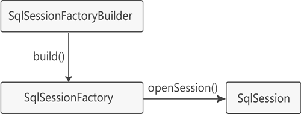
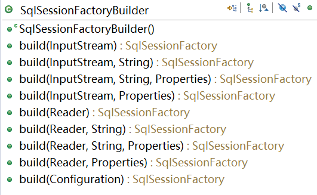

MyBatis核心对象
MyBatis 有三个基本要素：
下面首先介绍 MyBatis 的核心接口和类，如下所示。
每个 MyBatis 应用程序都以一个 SqlSessionFactory 对象的实例为核心。
首先获取 SqlSessionFactoryBuilder 对象，可以根据 XML 配置文件或者 Configuration 类的实例构建该对象。
然后获取 SqlSessionFactory 对象，该对象实例可以通过 SqlSessionFactoryBuilder 对象来获取。
有了 SqlSessionFactory 对象之后，就可以进而获取 SqlSession 实例。SqlSession 对象中完全包含以数据库为背景的所有执行 SQL 操作的方法，用该实例可以直接执行已映射的 SQL 语句。
通过上述分析，发现配置信息可以以三种形式提供给 SqlSessionFactoryBuilder 的 build() 方法，分别是 InputStream（字节流）、Reader（字符流）、Configuration（类）。
由于字节流和字符流都属于读取配置文件的方式，所以就很容易想到构建一个 SqlSessionFactory 有两种方式，即：读取 XML 配置文件和编写代码。一般习惯为采取 XML 配置文件的方式来构造 SqlSessionFactory，这样一方面可以避免硬编码，另一方面方便日后配置人员修改，避免重复编译代码。
所有的 MyBatis 应用都以 SqlSessionFactory 实例为中心，SqlSessionFactory 的实例可以通过 SqlSessionFactoryBuilder 对象来获取。有了它以后，顾名思义，就可以通过 SqlSession 提供的 openSession() 方法来获取 SqlSession 实例。源码如下。
- 核心接口和类
- MyBatis核心配置文件（mybatis-config.xml）
- SQL映射文件（mapper.xml）
下面首先介绍 MyBatis 的核心接口和类，如下所示。

首先获取 SqlSessionFactoryBuilder 对象，可以根据 XML 配置文件或者 Configuration 类的实例构建该对象。
然后获取 SqlSessionFactory 对象，该对象实例可以通过 SqlSessionFactoryBuilder 对象来获取。
有了 SqlSessionFactory 对象之后，就可以进而获取 SqlSession 实例。SqlSession 对象中完全包含以数据库为背景的所有执行 SQL 操作的方法，用该实例可以直接执行已映射的 SQL 语句。
SqlSessionFactoryBuilder
SqlSessionFactoryBuilder 会根据配置信息或者代码生成 SqlSessionFactory，并且提供了多个 build() 方法重载，如图。

通过源码分析，可以发现以上方法都是在调用同一签名方法，即：
build(Reader reader, String environment, Properties properties)
由于参数 environment 和 properties 都可以为 null，去除重复的方法，真正的重载方法其实只有如下三种：- build(InputStream inputStream, String environment, Properties properties)
- build(Reader reader, String environment, Properties properties)
- build(Configuration config)
通过上述分析，发现配置信息可以以三种形式提供给 SqlSessionFactoryBuilder 的 build() 方法，分别是 InputStream（字节流）、Reader（字符流）、Configuration（类）。
由于字节流和字符流都属于读取配置文件的方式，所以就很容易想到构建一个 SqlSessionFactory 有两种方式，即：读取 XML 配置文件和编写代码。一般习惯为采取 XML 配置文件的方式来构造 SqlSessionFactory，这样一方面可以避免硬编码，另一方面方便日后配置人员修改，避免重复编译代码。
SqlSessionFactoryBuilder的生命周期和作用域
SqlSessionFactoryBuilder 的最大特点就是用过即丢。创建 SqlSessionFactory 对象之后，这个类就不存在了，因此 SqlSessionFactoryBuilder 的最佳范围就是存在于方法体内，也就是局部变量。SqlSessionFactory
SqlSessionFactory 是工厂接口而不是现实类，他的任务就是创建 SqlSession。所有的 MyBatis 应用都以 SqlSessionFactory 实例为中心，SqlSessionFactory 的实例可以通过 SqlSessionFactoryBuilder 对象来获取。有了它以后，顾名思义，就可以通过 SqlSession 提供的 openSession() 方法来获取 SqlSession 实例。源码如下。
public interface SqlSessionFactory {
SqlSession openSession();
SqlSession openSession(boolean autoCommit);
SqlSession openSession(Connection connection);
SqlSession openSession(TransactionIsolationLevel level);
SqlSession openSession(ExecutorType execType);
SqlSession openSession(ExecutorType execType, boolean autoCommit);
SqlSession openSession(ExecutorType execType, TransactionIsolationLevel level);
SqlSession openSession(ExecutorType execType, Connection connection);
Configuration getConfiguration();
}
SqlSessionFactory的生命周期和作用域
SqlSessionFactory 对象一旦创建，就会在整个应用程序过程中始终存在。没有理由去销毁或再创建它，并且在应用程序运行中也不建议多次创建 SqlSessionFactory。因此 SqlSessionFactory 的最佳作用域是 Application，即随着应用程序的生命周期一直存在。这种“存在于整个应用运行期间，并且只存在一个对象实例”的模式就是所谓的单例模式（指在运行期间有且仅有一个实例）。SqlSession
SqlSession 是用于执行持久化操作的对象，类似于 JDBC 中的 Connection。它提供了面向数据库执行 SQL 命令所需的所有方法，可以通过 SqlSession 实例直接运行已映射的 SQL 语句。void clearCache(); Configuration getConfiguration(); void rollback(boolean force); void commit(boolean force); int delete(String statement, Object parameter); ...SqlSession 的用途主要有两种。
- 获取映射器。让映射器通过命名空间和方法名称找到对应的 SQL，并发送给数据库，执行后返回结果。
- 直接通过“命名空间（namespace）+SQL id”的方式执行 SQL，不需要获取映射器。这是 iBatis 版本留下的方式。例如《第一个MyBatis程序》一节的示例就是这种方式执行的 SQL 语句。
SqlSession生命周期和作用域
SqlSession 对应一次数据库会话。由于数据库会话不是永久的，因此 SqlSession 的生命周期也不是永久的，每次访问数据库时都需要创建 SqlSession 对象。需要注意的是：每个线程都有自己的 SqlSession 实例，SqlSession 实例不能被共享，也不是线程安全的。因此 SqlSession 的作用域范围是 request 作用域或方法体作用域内。
关注公众号「站长严长生」，在手机上阅读所有教程，随时随地都能学习。内含一款搜索神器，免费下载全网书籍和视频。

微信扫码关注公众号